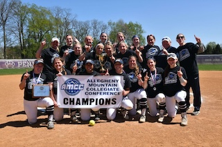

Recorded 52 hits, including 11 doubles, 4 triples, and 7 home runs
Ranked first in the AMCC with 42 RBIs
Ranked first in the AMCC with 7 home runs
Scored 38 runs
An image in Florida after Jocelyn achieved 100 career hitsAn image of Jocelyn advancing our team on the bracket as AMCC ChampionsAn image of the 2024 Penn State Behrend softball team as AMCC ChampionsAn image of the 2024 Penn State Behrend softball team
2023 Season - Sophomore Year
Academic All-AMCC
Second Team All-AMCC
Recorded 45 hits, including 14 doubles, 3 triples, and 4 home runs
Ranked second in the AMCC with 32 RBIs
Tied for second in AMCC with 4 home runs
Scored 27 runs
2022 Season - Freshman Year
Academic All-AMCC
First Team All-AMCC
Ranked second on the team with 40 hits and 28 RBIs
Led the squad with 4 home runs while adding 9 doubles and a triple
Scored 29 runs and drove in another 28
Had 10 multiple-hit games
An image of Jocelyn hitting

An image of the 2022 Penn State Behrend softball team